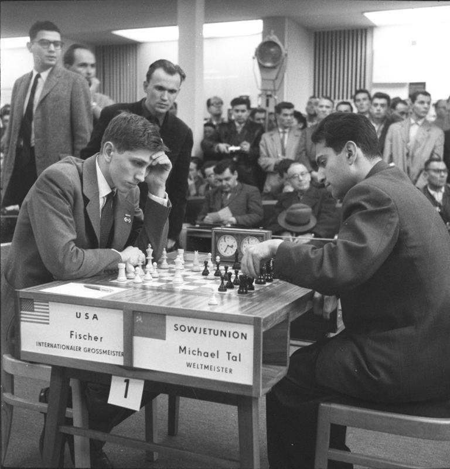

Remember chess the way you remember a good story.
LuChess links every game you study to the ideas behind it. Read articles by real players, build your own web of notes, then practice it across the board.
Every article is free to read. Read one now, no account needed.
Fischer v. Tal, Leipzig 1960 · Photo: Bundesarchiv, Bild 183-76052-0335 / Kohls, Ulrich · CC BY-SA 3.0 DE · cropped and toned
_gegen_Fischer_(USA).jpg){kind=link}
Read it. Connect it. Play it.
Read
Start with articles and annotated games by people who care about chess, not an engine's evaluation bar.
Connect
Turn each game into a note. Link it to the openings, ideas and endgames it reminds you of.
Play
Challenge a friend or a bot on the exact line you studied, and see whether it stuck.
Ideas stick when
they connect.
Niklas Luhmann filled thousands of linked notes and said they did his thinking with him. LuChess brings that habit to your games.
- One note for each game, named however you like
- Link games to each other the way Obsidian does
- Short comments that capture one big idea, not a wall of moves

Good resources beat
more engine lines.
The games you remember have a story. LuChess is built around articles and notes from real players, with their reasoning laid out where you can follow it.
- Read articles in a clean, book-like Read view
- Follow creators and topics you trust
- Add your own notes to an article for everyone
(use the live Read view, same browser frame as above)
Read before you sign up.
Anyone can read any article, including readers' notes. An account is only for saving, linking and playing.
Questions,
answered.
Do I need an account to read articles?
No. Articles and readers' notes are open to everyone. An account is only for saving, linking and playing.
What is a chess note?
One game, named your way, with the big idea in a sentence or two and links to the other notes it connects to.
What can I do as a guest?
[Answer to confirm: what a guest can try before signing up, and whether guest notes carry over.]
Do I need a Chess.com or Lichess account?
No. LuChess keeps one rating of its own.
Why not just use an engine?
An engine tells you the move. A person tells you why, and the why is what you remember at the board.
Start your first note.
Make an account, link your first two games, and see how it feels.